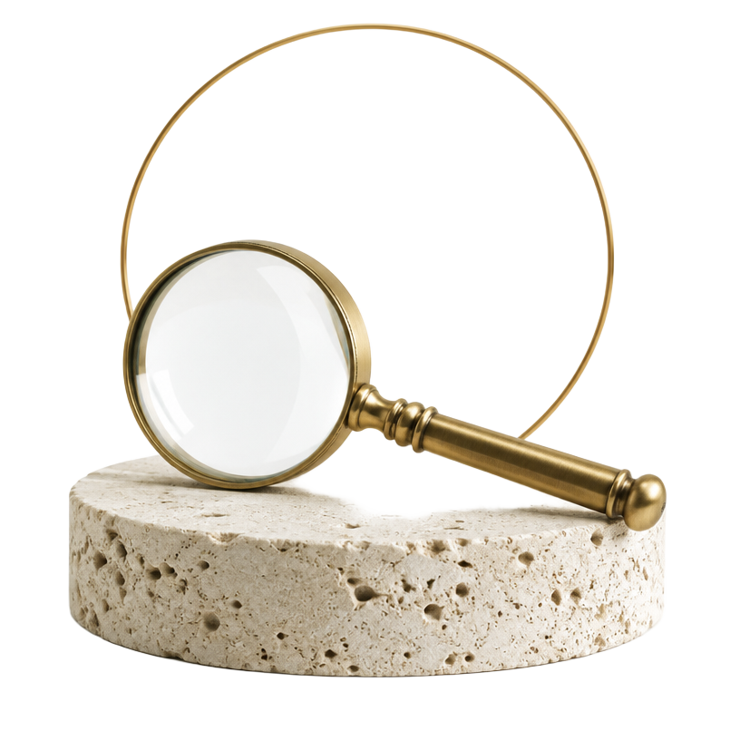
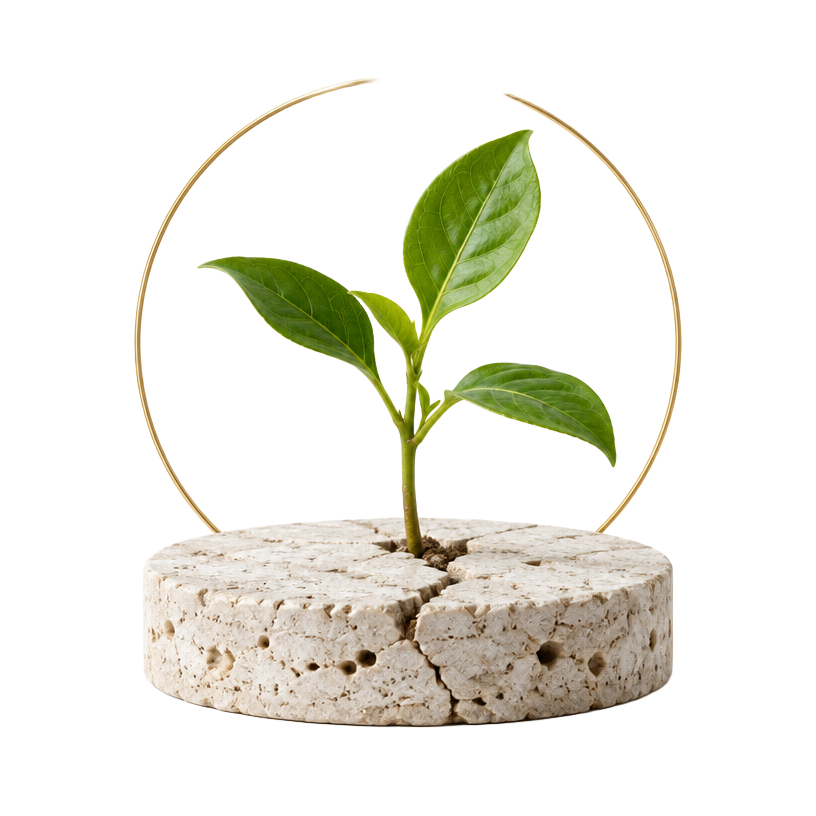
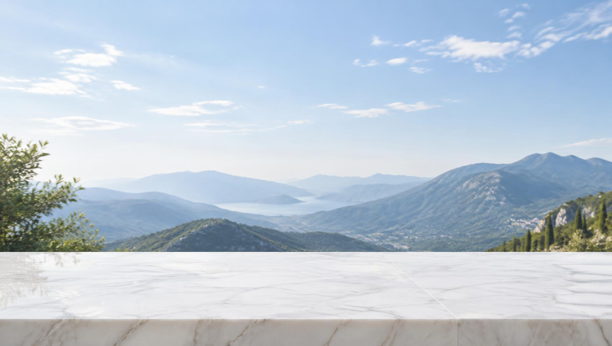

THE MAP
A different way to meet what was once invisible and automatic.
Reactivity
From automatic to aware.
Awareness
From invisible to visible.
Integration
From rejection to wholeness.
Sovereignty
From protection to values.
Creative Agency
From limitation to creation.

Sometimes protection doesn't look like protection.
It can look and feel like who you are.
Different strategies. A similar intelligence:
To protect what once didn't feel safe to be.
These responses weren't random.
They may once have helped you navigate the world you were in as a child.
In different ways, they answered a question:
Given the world I'm experiencing, what is the safest way to be?
- Maybe staying quiet kept connection.
- Maybe perfection brought approval.
- Maybe people-pleasing kept the peace.
- Maybe independence protected vulnerability.
- Maybe shutting down made overwhelming feelings more manageable.
And sometimes, what helped us adapt becomes automatic.
- You say yesbefore noticing you wanted to say no.
- You become defensivebefore realizing something hurt.
- You pull awaywhen what you really want is closeness.
- You try to get it rightbefore allowing yourself to create.
- You look outside yourself for reassurancebefore asking what you actually feel or want.
- You shut downbefore knowing what became too much.
The pattern can happen so quickly that it doesn't feel like a pattern.
IT JUST FEELS LIKE YOU.
What has become familiar is not necessarily all of who you are.
THE MAP
A Map for meeting what was once invisible and automatic, differently.
Reactivity
Automatic
Awareness
Visible
Integration
Met
Sovereignty
Choosable
Creative Agency
Available
- 01ReactivityAutomaticThe pattern is happening before you can see it.
- 02AwarenessVisibleWhat was automatic becomes something you can observe.
- 03IntegrationMetWhat became visible can be met differently.
- 04SovereigntyChoosableWhat once chose for you no longer has to choose for you.
- 05Creative AgencyAvailableWhat becomes available when protection no longer has to lead.
WHAT BECOMES AVAILABLE?
Self
Experience
Expression
Relationship
Creation
Greater capacity for:
- 01GroundingStay with yourself when life gets difficult.
- 02PresenceFeel what you feel without being ruled by it.
- 03AuthenticitySay what is true without hiding who you are.
- 04Relational SecurityStay secure within yourself even as someone gets close.
- 05Creative FreedomCreate what matters without needing to prove yourself.
More of you.
Founder Story
WHY ALCHEMIST WAYS EXISTS
For years, I thought I was searching for freedom. Validation. Creativity. Love.
But beneath all of those desires was something quieter I couldn't yet see.
I was searching for inner safety.
Much of my life had become organized around looking outside myself— for approval, direction, permission, and confirmation that who I was and what I wanted could be trusted.
Eventually, I stopped trying to escape my anger and began trying to understand it.
What is this anger trying to communicate?
Following that question led me beneath the anger— to fear, hurt, protection, old conclusions about myself, and parts of myself I had left behind.
The Map emerged from that process.
Alchemist Ways grew from learning to meet those parts differently.
Malek Najm Ghaleb
Founder, Alchemist Ways
Read the Founder Story
What was always here within you becomes
STILL ENOUGH TO SEE.
FREE ENOUGH TO CREATE.
Creative Agency
Creative Agency is not control over life. It is the growing freedom to meet what life brings with more of yourself.
Not because fear disappears. Not because old patterns never return. But because they no longer have to be the only forces choosing what happens next.
More of you becomes available.

BEGIN WHERE YOU ARE
There is no single place you have to begin.
You don't have to become someone else. You can learn to meet what is already here, differently.